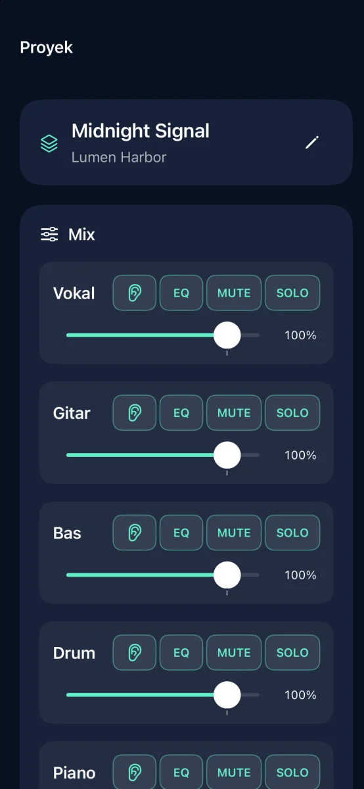
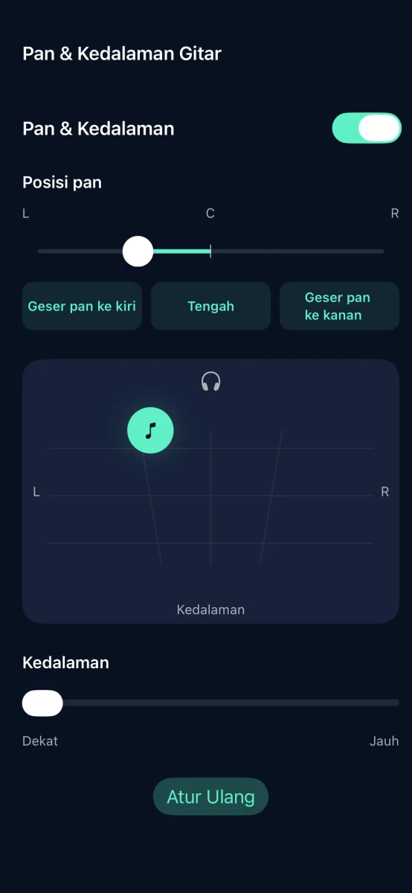
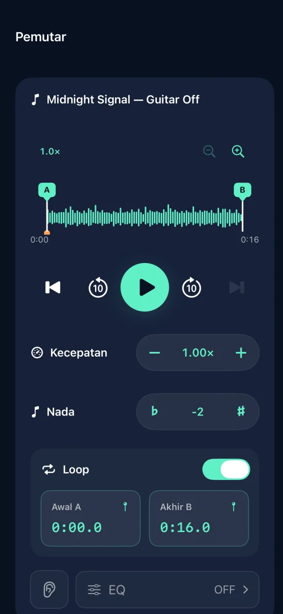

Pemisah trek dan alat latihan musik untuk iPhone

Ubah lagumu jadi musik pengiring
Pisahkan lagu menjadi enam trek dan bisukan bagian yang kamu mainkan.
Segera hadir di App Store

Fitur



Pemisah trek dan alat latihan musik untuk iPhone
Pemisahan audio dilakukan di perangkat. Tidak perlu akun.
Sesuaikan volume, mute, solo, EQ, Pan & Kedalaman setiap trek. Ekspor sebagai M4A, MP3, atau WAV.
Coba tiga pemisahan yang berhasil secara gratis. Satu kali pembelian membuka pemisahan tanpa batas. Tanpa langganan.
Trek streaming dan audio yang dilindungi DRM tidak dapat diimpor. Gunakan audio yang berhak Anda gunakan.
Bantuan & Dukungan ↗